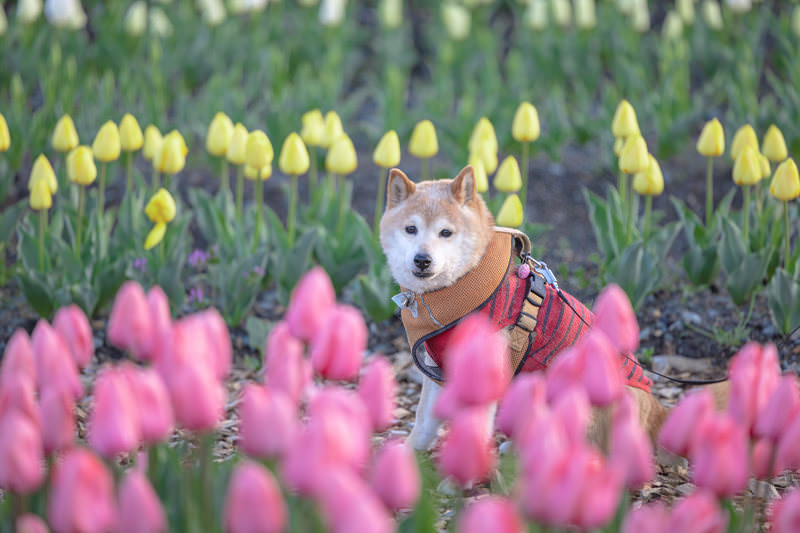
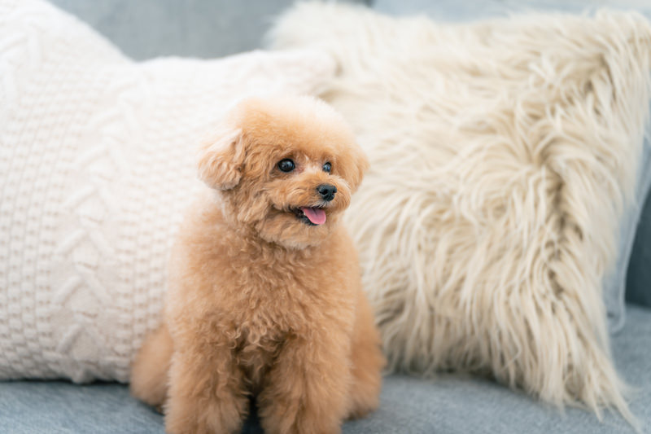
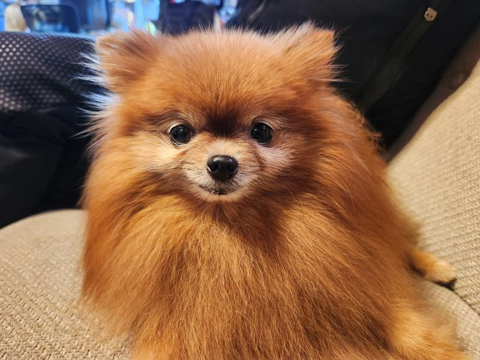

柴犬
柴犬は日本天然記念物に指定された７つの日本犬種（現存は６犬種）のうちの１つです。猟犬として活躍していたルーツもあり、性格は賢くて我慢強いです。１番好きな犬種で性格が少しツンデレなところもとてもかわいいです。
推しポイント
- すらっとした体型でかっこいい
- 主人に対してはとても忠実
- しっぽがくるっと巻いている
- 眉毛のところが丸く白色になっている
コーギー

コーギーは、活動的で遊び好きな性格で、牧羊犬らしい賢さがあり、社交的な犬種です。また、警戒心が強く、気が強いような一面もあります。短かい足と丸みのある体型が特徴で短い手足で頑張って走っている姿がとてもかわいいです。
トイプードル
トイプードルは聡明で、運動能力があり、好奇心が強い犬種です。プードルの中で最も賢いともいわれています。家族に対しての愛情が深く、ほかの犬や人に上手に接することができます。小柄な体でもこもこしている毛並みがとてもかわいいです。
ポメラニアン
ポメラニアンはふわふわとした毛並と丸い大きな目が特徴の小型犬です。手足がとても小さく、しっぽが背中に向けて巻いているのが特徴です。飼い主に向かってぴょんぴょんしているのをよく見かけてとてもかわいいです。
チワワ

チワワはとても小さい体ながら、明るく陽気だが勇敢な性格特徴の犬種です。甘えん坊で好奇心旺盛ですが、警戒心が強い一面も持っています。よく自分の何倍もある犬や人に対して吠えてるのを見かけます。とても小さくてかわいいです。